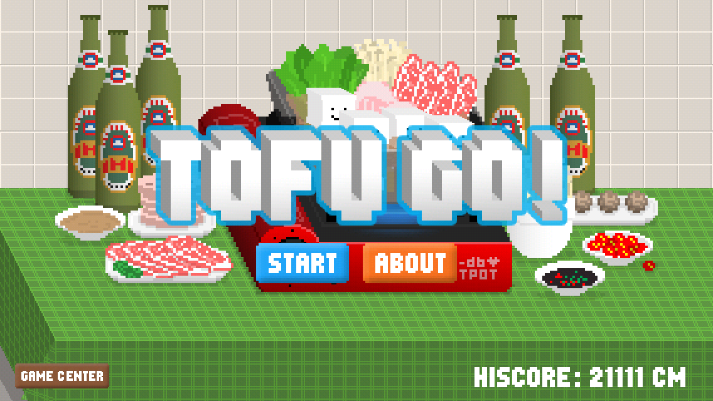
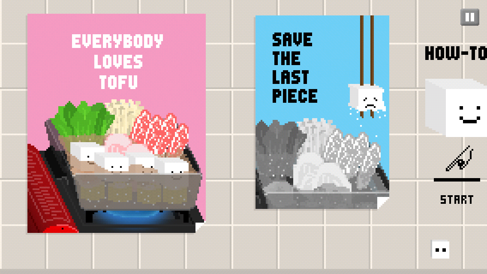
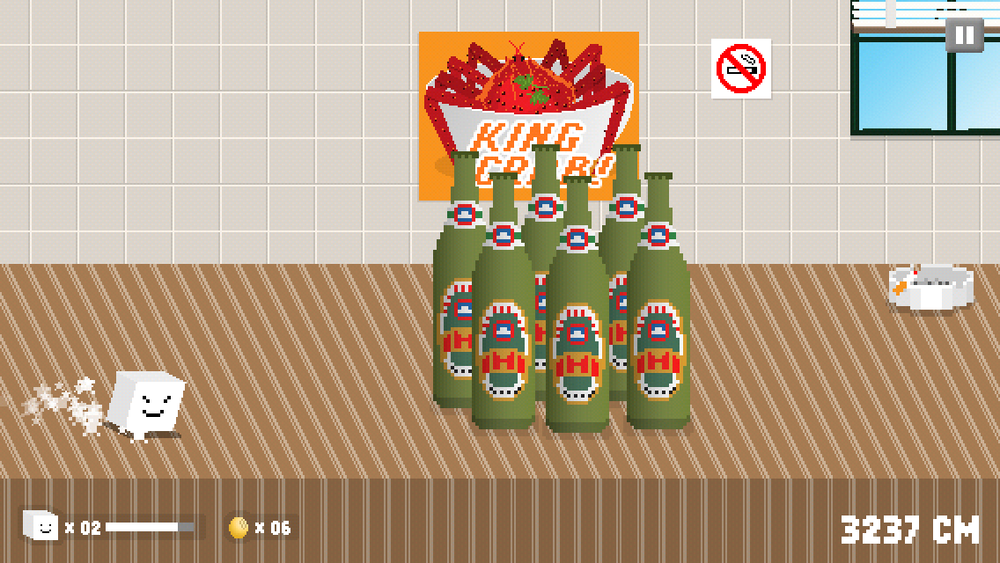

First released on the App Store in 2011, Tofu Go! is back. Help one determined little tofu escape the evil chopsticks in a careful revival of the pixel-art classic for iPhone and iPad.
An App Store original, carefully revived.Original release: 2011One-touch playGame Center scores
Run for it
Save the last piece
A tiny hero. A very hungry pair of chopsticks.
Hold to gather your courage. Let go to jump. Keep Tofu moving across crowded dining tables while the chopsticks close in.
Dodge plates, bottles and hot pots, collect soybeans, and recover with soy milk. The simple one-touch rhythm is easy to learn; keeping the last piece of tofu alive is another matter.
01Hold
Press and hold to crouch and charge your jump.
02Release
Let go to leap over hazards and gaps.
03Run
Stay ahead of the chopsticks and chase a longer distance.

The original title screen.

Save the last piece.

One-touch pixel-art action.
Back from the old App Store
This is the original Tofu Go!, revived with its character, food-world humor and pick-up-and-play challenge intact. Tofu Go! 2 remains a separate adventure.
For a bug, include your iPhone or iPad model, iOS or iPadOS version, app version, what happened, and the steps that led to it. A screenshot can help. Please do not send passwords or payment-card details.
How do I play?
Press and hold to charge Tofu's jump, then release to leap. Avoid obstacles and gaps while staying ahead of the chopsticks. Your distance is your score.
My Game Center score is not appearing.
Confirm that you are signed in to Game Center in your device settings and that the device is online, then finish another run. Apple manages Game Center accounts and leaderboards. If the score still does not update, include that detail in your support email.
Where is my high score stored?
Your local high score is stored on your device. Game Center leaderboard scores are associated with your Apple Account. Deleting the app can remove its local high score, so avoid reinstalling as a first troubleshooting step.
The game closes or something looks wrong.
Close and reopen the app, then check the App Store for an available update. If the problem returns, email us with your device and app version and what you were doing when it happened.
Is this Tofu Go! 2?
No. This page is for the original Tofu Go!, first released in 2011. Tofu Go! 2 is a separate game with its own support and privacy page.
Your run. Your information.
Privacy policy
For the revived Tofu Go! and this webpage.
Effective and last updated: Publisher: Francis Lam / db-db-db
1. The short version
Tofu Go! contains no advertising, advertising SDKs, analytics SDKs or cross-app tracking. The game does not request permission to track you and does not require an account with us. We do not operate a game-data server or player-account database.
The game can use Apple's Game Center service to submit and display leaderboard scores. Apple handles Game Center information under its own privacy practices.
2. Information stored on your device
Tofu Go! stores local preferences and your local high score so the game can remember your choices and best run. This information stays on your device and is not uploaded to a server operated by us.
Local information remains until it is changed or removed. Deleting the app normally removes its local information. Device backups may retain app information according to your Apple backup settings.
3. Apple Game Center
When Game Center is available, the game authenticates through Apple and can submit your score to a leaderboard. Your Game Center profile and scores may be visible to other players according to your Game Center settings. We do not maintain a separate player database or send Game Center information to our own server.
Apple manages these accounts and records. See Game Center & Privacy and use your device's Game Center settings to manage your account and sharing choices.
4. Support email
If you email dbdbking@gmail.com, we receive your email address and the message and attachments you choose to send. We use them to answer your request and resolve the issue. Email is handled by our email provider; it is separate from information stored inside the game.
We retain support correspondence only as long as needed for your request, related follow-up and applicable legal obligations. You can ask us to delete your correspondence using the email address above. Please send only information relevant to your request.
5. This website and external links
This page has no analytics scripts, advertising, cookies set by its code or embedded third-party media. It is hosted on GitHub Pages. GitHub may process technical request information, such as your IP address, browser details and request time, to provide and protect its hosting service. See GitHub's Privacy Statement.
Links may open other websites or apps. Those destinations handle information under their own privacy policies. Opening an email link does not send a message until you choose to send it.
6. Sharing, children and your choices
We do not sell personal information or share game data with advertising or analytics networks. Apple and our email and website providers handle information to provide their respective services under their own privacy practices.
The game is designed for a general audience and does not knowingly collect personal information from children. Please do not include a child's personal information in a support message.
You can remove local information by deleting the app, manage Game Center and Apple Account information through Apple, and contact us about support correspondence. Depending on where you live, you may have rights to access, correct or delete personal information or object to its use.
7. Updates and contact
We may update this policy when the app or our information practices change. We will publish the current policy here and revise the date above.